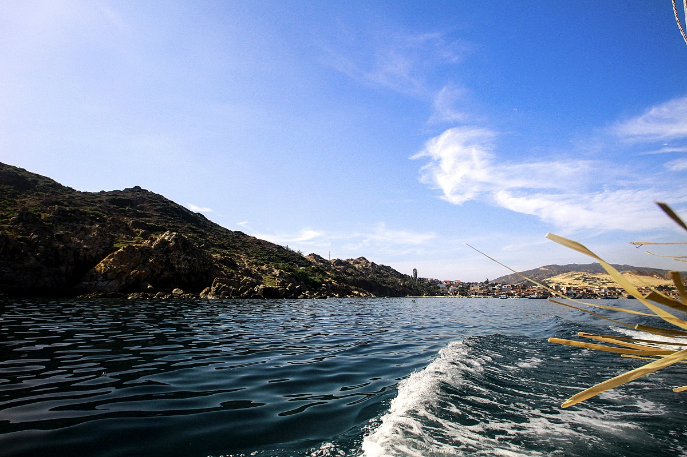
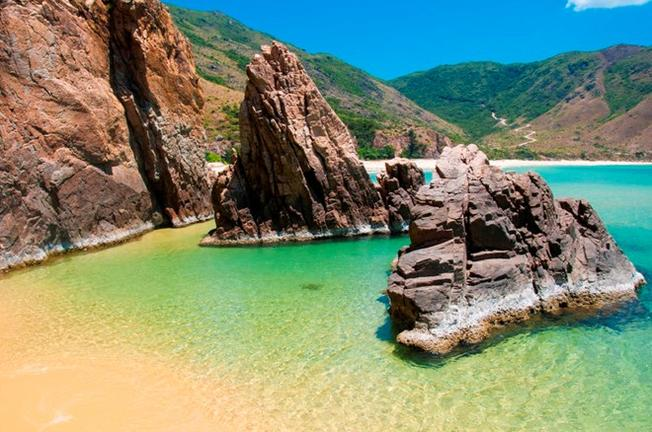
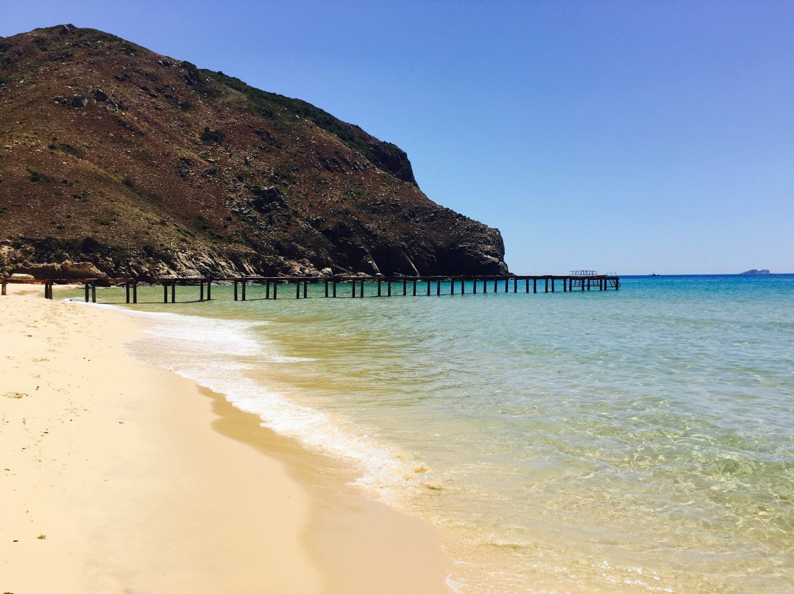

 Nằm cách trung tâm thành phố Quy Nhơn khoảng 25km, tọa lạc dưới chân núi Phương Mai cao sừng sững thuộc bán đảo Nhơn Lý, Kỳ Co hiện lên mang đủ đầy vẻ đẹp nguyên thủy mà mơ mộng của một bãi tắm hoang sơ ít dấu chân người. Kỳ Co là một bãi biển đặc biệt, đường bờ biển cong như lưỡi liềm với 3 mặt giáp núi và 1 mặt giáp biển. Có một vài hỏm đá thật đẹp, đá chịu sự bào mòn muôn đời của sóng biển tạo nên những mặt hồ nước tự nhiên, thú vị vô cùng.
 Nước biển ở Kỳ Co có hai màu rõ rệt, ở gần bờ là màu xanh ngọc, có thể nhìn xuống tận đáy, ra xa lại có màu xanh lam. Thử leo lên một vách núi nào đó, nhìn toàn cảnh Kỳ Co, người ta chợt ngẩn ngơ quên lối. Một không gian đủ đầy màu sắc, như một bức họa thiên nhiên thơ mộng, trữ tình. Sự hài hòa của cát, của đá như những nét chấm phá thần kỳ trên nền xanh của nước biển mênh mông.
 Kỳ Co mang cái vẻ đẹp từ thuở hồng hoang. Mặc sự chuyển dời của thời gian, nơi chốn ấy vẫn giữ trong mình những nét hoang sơ, chân chất nhất. Vì thế mà người lữ khách thích tìm về, về để được sống trong một khung trời bình yên, thơ mộng, để biết đâu là cảm giác hài hòa thực sự với thiên nhiên đất trời, thư thái, yên bình đến thế.